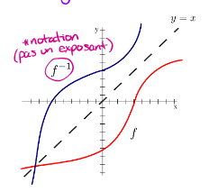

What is an inverse of a relation?
An inverse relation is a reflection of a relation relative to y=x.
In an inverse relation:
- The domain becomes the image, and the image becomes the domain

3 methods of identifying an inverse
Method 1: Table of values
- Take the table of values of and flip every value of x to y and every value of y to x
- Turn the domain into the image and the image into the domain
Method 2: Graph
- Trace the inverse of the relation by switching the x and y values
Method 3: Equation
- Switch the values of x and y in the equation
- Isolate y